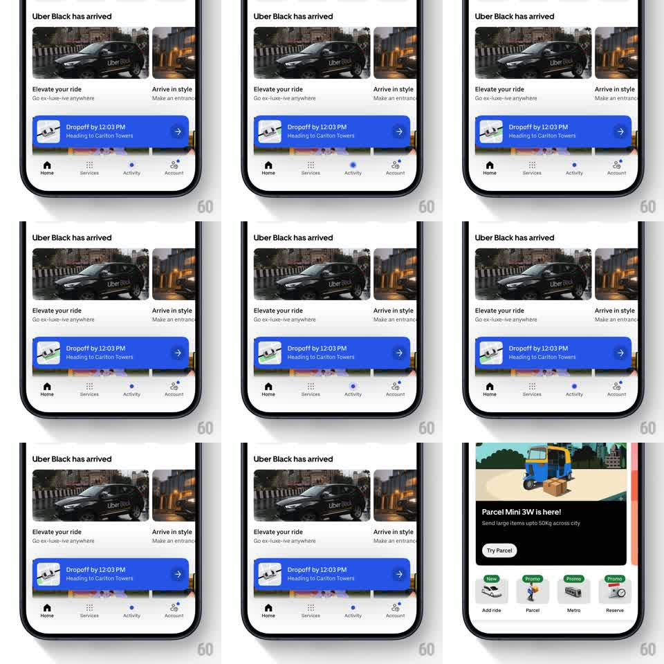

Media
Frame-by-frame

Rebuild this animation 1:1: Uber's live-trip banner - a blue dropoff banner rises over the home feed while a miniature cab crawls along the route in its map thumbnail, keeping the trip alive on screen.

Rebuild this animation 1:1: Uber's live-trip banner - a blue dropoff banner rises over the home feed while a miniature cab crawls along the route in its map thumbnail, keeping the trip alive on screen.
## Integration
Integration: stack-agnostic spec - springs given as stiffness/damping, timed motions as duration + curve; map every value to your framework and animation library of choice.
## Scene
Uber home, light theme: "Uber Black has arrived" headline with two full-width photo cards ("Elevate your ride", "Arrive in style"), a standard tab bar, and a floating blue banner - map thumbnail left, "Dropoff by 12:03 PM" bold, "Heading to Carlton Towers" below, chevron right.
## Motion spec
Pattern: persistent trip banner with a live miniature route.
- The banner slides up from behind the tab bar (spring ~300/20, translateY 100% -> 0) and settles with a soft overshoot 250ms after the feed loads.
- Inside the thumbnail map, a small cab marker inches along the route polyline (constant speed, ~8s end-to-end loop, heading-rotated to the line) with a subtle pulsing destination dot.
- The ETA text updates in place with a quick digit roll (150ms) rather than a hard swap.
- On tap, the banner expands to the trip sheet (350ms, shared-element growth from the banner's frame); on trip end, it slides back down and dismisses.
## Calibration
- The banner floats with 8px margins and a soft shadow - it never touches the screen edges or the tab bar.
- The cab's motion is slow and steady; it reads as live tracking, not a loading spinner.
## Reduced motion
Banner fades in (200ms); cab marker steps along the route at 2s intervals without continuous motion.
## Don't miss
- The map thumbnail has rounded corners matching the banner's radius scale, not a raw square.
- The feed cards behind shift up slightly when the banner arrives - layout gives the trip room.